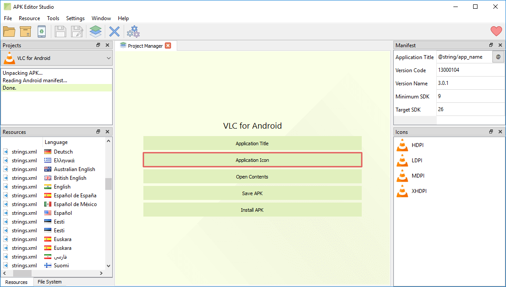
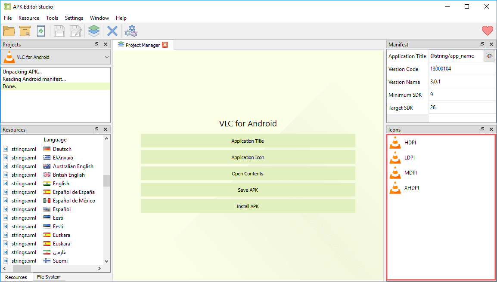
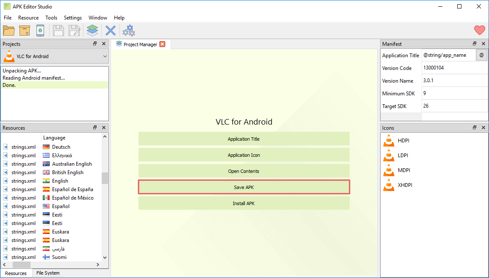

Как изменить иконку приложения Android
Три простых шага для замены значка приложения Android с использованием APK Editor Studio
November 13, 2019
В этом руководстве вы узнаете, как быстро заменить иконку Android-приложения. С использованием APK Editor Studio это делается невероятно легко и не требует никаких технических навыков.
Краткое описание
- Скачайте APK Editor Studio.
- Откройте APK в APK Editor Studio.
- Нажмите «Значок приложения» и выберите новую иконку.
- Нажмите «Сохранить APK».
- Готово!
Подробное руководство
Шаг 1
Прежде всего необходимо скачать APK Editor Studio. Эта программа полностью бесплатна и доступна для всех основных операционных систем – Windows, macOS и Linux. Установите её и откройте нужный APK.
Шаг 2
Нажмите кнопку Значок приложения и выберите необходимое изображение для новой иконки.

Это автоматически заменит все значки приложения. Если же вы хотите установить различные иконки для определённых размеров экрана, нажмите правой кнопкой на нужный элемент в списке «Значки» и выберите действие Заменить ресурс или же просто перетяните файл с изображением.

APK Editor Studio поддерживает множество форматов (такие как PNG, SVG, JPEG, BMP, ICO, GIF) и при необходимости автоматически конвертирует изображения.
Шаг 3
Нажмите Сохранить APK и дождитесь окончания упаковки.

Готово! Теперь у вас есть автоматически подписанный файл APK с новым значком.
Более того, вы можете сразу установить APK на вашу систему Android: нужно всего лишь подключить ваше устройство и нажать Установить APK.
Заключение
Довольно просто, не так ли? APK Editor Studio позволяет вносить небольшие изменения в приложения Android без особых технических знаний и навыков, равно как и создавать масштабные модификации APK любого вида. Попробуйте сами.
Это руководство также доступно на следующих языках: